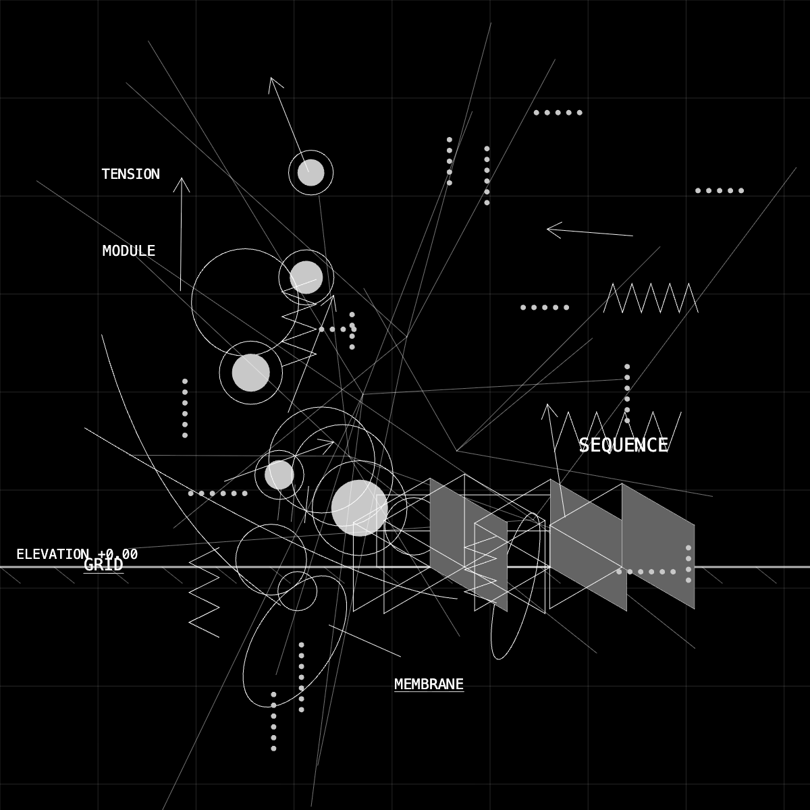

Catalog · chronicle
Technical Drawing
A running chronicle for the Technical Drawing series: how notation, grid, and elevation move from idea to live generative work in the browser. This page complements the sketch files in the Catalog — progression and notes, not a finished statement.
Current
technical 020
Abstract Technical Drawing with Elevation (2026) · 1:43. A browser-based study built as a single HTML page: p5.js draws an abstract technical composition on a dark field.
Sound: each drawing step triggers a note from a shuffled pentatonic sequence played with embedded samples of a Salamander acoustic grand piano (Yamaha-C5). A life bar tracks progress through the pass; a line of note names at the bottom records the same sequence as it unfolds.
Objkt record: technical 020 on Objkt. Open the sketch alone, or the project page (landing + embedded sketch) for the full experience.
Salamander Grand Piano (Yamaha C5) — Alexander Holm, CC BY 3.0, via FreePats.
April 2026 · Teia
technical 021
Mark Walhimer · p5.js HTML drawing · Mint 5 Apr 2026, 23:54 (5 April 2026). Permanent record: teia.art/objkt/878978.

Catalog
Related files
Earlier and alternate versions (animated, static, generators, fxhash) are listed under Technical in the Catalog index. Use search or expand the series to open any sketch.
Next
Adding to this chronicle
Add dated sections and images under sketches/technical/technical-drawing-chronicle/assets/, then new <section> blocks here (see technical 021 above).